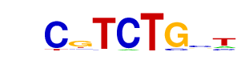

| p-value: | 1e-596 |
| log p-value: | -1.374e+03 |
| Information Content per bp: | 1.662 |
| Number of Target Sequences with motif | 1461.0 |
| Percentage of Target Sequences with motif | 9.59% |
| Number of Background Sequences with motif | 572.7 |
| Percentage of Background Sequences with motif | 1.71% |
| Average Position of motif in Targets | 39.4 +/- 17.7bp |
| Average Position of motif in Background | 51.1 +/- 32.4bp |
| Strand Bias (log2 ratio + to - strand density) | -0.3 |
| Multiplicity (# of sites on avg that occur together) | 1.03 |
| Motif File: | file (matrix) reverse opposite |
| Rank | Match Score | Redundant Motif | P-value | log P-value | % of Targets | % of Background | Motif file |
| 1 | 0.973 | 1e-544 | -1253.739763 | 7.58% | 1.13% | motif file (matrix) | |
| 2 | 0.937 | 1e-426 | -982.059649 | 7.07% | 1.29% | motif file (matrix) | |
| 3 | 0.916 |  | 1e-395 | -909.998577 | 10.47% | 2.98% | motif file (matrix) |
| 4 | 0.705 | 1e-350 | -807.524479 | 32.89% | 19.17% | motif file (matrix) | |
| 5 | 0.901 | 1e-334 | -770.354061 | 5.21% | 0.88% | motif file (matrix) | |
| 6 | 0.878 | 1e-310 | -715.074109 | 13.57% | 5.42% | motif file (matrix) | |
| 7 | 0.845 | 1e-216 | -498.237084 | 19.60% | 10.90% | motif file (matrix) | |
| 8 | 0.772 | 1e-56 | -129.859486 | 0.62% | 0.07% | motif file (matrix) |